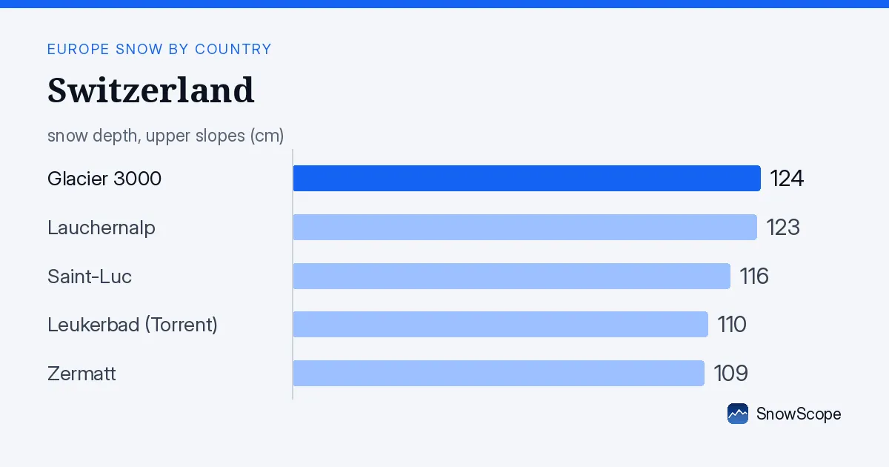
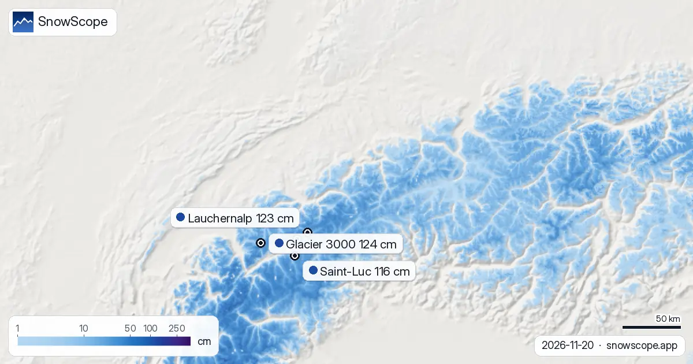

Switzerland: glaciers ahead, Glacier 3000 at 124 cm
Glacier 3000 sits at 124 cm depth today, well ahead of the country's other high-altitude resorts. The glacier zone has captured the most snow in this early-season push, with 128 cm measured in the past three days.
See the live snow forecast for Glacier 3000 in the SnowScope appSnow depth, powder alerts and the 3D map, free.
Why glaciers win in November
High altitude is everything in early season. Glacier 3000, at 2931 m, sits in the zone where snow sticks and builds. The Valais Alps, where Glacier 3000 sits, have picked up 192 cm in 72 hours, far more than any other region in Switzerland. The Bernese Oberland, with Lauchernalp at 3084 m, is next with 119 cm in the same period.
The snow line today sits at 1200 m, which means the lower valleys and mid-altitude slopes are still mostly bare. At 2000-2500 m, mean depth is 16 cm and coverage is complete. Above 2500 m, the average is 29 cm. Glaciers, by definition, sit above these heights and catch the first real snow of the season.
| Resort | Snow depth | New snow, 72 h | Coming, next days | Top |
|---|---|---|---|---|
| Glacier 3000 | 124 cm | 128 cm | 86 cm | 2,931 m |
| Lauchernalp | 123 cm | 86 cm | 68 cm | 3,084 m |
| Saint-Luc | 116 cm | 84 cm | 52 cm | 2,973 m |
| Leukerbad (Torrent) | 110 cm | 82 cm | 61 cm | 2,596 m |
| Zermatt | 109 cm | 100 cm | 50 cm | 3,872 m |

Five resorts with the most snow now
Glacier 3000 leads with 124 cm. Lauchernalp, in the Bernese Oberland, holds 123 cm at 3084 m. Saint-Luc in the Valais sits at 116 cm. Leukerbad (Torrent) is at 110 cm, and Zermatt, the most famous name, has 109 cm. All five are above 2500 m.
What matters for the next few days: Glacier 3000 will gain another 86 cm over the next three days. Lauchernalp expects 68 cm more. These are not final numbers—the model runs show how much fresh snow the weather will bring, and that can shift. But the trend is clear: high glacier terrain will keep pulling away from lower resorts.

Snow bands: who gets what by height
Below 1000 m, almost no snow. Between 1000 and 1500 m, only 59% of the area is covered and mean depth is just 2 cm. This is the zone where many valley resorts sit, and they are still very limited.
The jump comes at 1500 m. Here, snow cover rises to 93% and depth reaches 10 cm on average. At 2000 m and above, coverage is complete. This sharp line—the band between 1500 and 2000 m—is where the season truly starts. Everything above that level is building fast. Everything below is still waiting.
Country-wide snow cover grows fast
Snow cover across the modelled area jumped from 16,170 km² seven days ago to 19,900 km² today. That is 3,730 km² of new white ground in one week. Yesterday to today, the gain was 1,740 km². The white share of Switzerland is now 64%, up from 52% a week ago.
Of our 280 tracked resorts, 224 now have measurable snow. Early November brought thin coverage and bare patches. This week's push has changed the picture. Even so, rocks are still showing through on many lower slopes, and thin snow can hide them. Early-season conditions mean careful line choice, especially off-piste.
What comes next
Tomorrow, 22 November, is the snowiest day in the forecast. The model shows 38 cm at peak areas. Over the next three days, the Valais Alps and Bernese Oberland will see the heaviest falls. Over seven days, the country could gain another 89 cm at the highest points.
By late November, the second week of data (28 November to 4 December) shows snow will ease. Only 24 cm is forecast for that week, compared to 55 cm in the first full week ahead. The push ends, and the season settles into a slower pace.
How Switzerland compares
Austria, to the east, has 44% white cover and its leader (Rifflsee) holds 120 cm. France, to the west, is at 14% white cover with Les Arcs at 166 cm, but the picture there is uneven. Switzerland's 64% cover puts it well ahead for this date. The glacier belt is the reason. Austria has glaciers too, but Switzerland's high terrain is capturing the first big storm surge of the season more fully.
Tips for skiers
- Stick to runs above 2000 m for now. Below 1500 m, snow is thin (2-10 cm mean depth) and rocks are exposed. Glacier 3000 and Lauchernalp are safer early-season choices than lower valleys.
- Fresh snow will add 38 cm tomorrow (22 November) in peak zones. Expect soft conditions and avalanche hazard. Check the official avalanche bulletin before any off-piste skiing.
- The next three days favour the Valais Alps (Glacier 3000, Zermatt, Saint-Luc) over lower resorts. If you want deep snow now, go high and go south.
- Plan for 86 cm more at Glacier 3000 within three days. Early-season depth will grow fast at glacier resorts but stay thin lower down.
- By early December, snow input will drop sharply. This is the window for riding fresh powder in the high zones before the rhythm slows.
About these numbers
Resort snow depths are the deepest snow on the resort's upper slopes from the SnowScope snow model (about 1 km, run of 20 November); they are estimates for an area, not a measurement at one point. Station values are measurements on the date shown. Forecasts can change. Always read the official avalanche bulletin before going off-piste.
Cite this report
For research, teaching or the press: the numbers and charts are free to reuse under CC BY 4.0 with this citation.
SnowScope (2026), Switzerland: glaciers ahead, Glacier 3000 at 124 cm, https://snowscope.app/blog/en/2026/11/switzerland-glaciers-lead-20-november-2026.html, accessed 2026-11-20
SnowScope (Atlas Labs). (2026, November 20). Switzerland: glaciers ahead, Glacier 3000 at 124 cm. SnowScope snow reports. https://snowscope.app/blog/en/2026/11/switzerland-glaciers-lead-20-november-2026.html
BibTeX
@misc{snowscope2026switzerlandglacierslead2,
author = {{SnowScope (Atlas Labs)}},
title = {Switzerland: glaciers ahead, Glacier 3000 at 124 cm},
year = {2026},
month = nov,
howpublished = {\url{https://snowscope.app/blog/en/2026/11/switzerland-glaciers-lead-20-november-2026.html}},
note = {Published 2026-11-21 11:04 UTC; accessed 2026-11-20}
}· CC BY 4.0 · Methods, data and tools →
Glacier 3000: snow and temperature by height, this winter vs last (tools) →
Follow Glacier 3000
Free: a message when fresh snow is coming, and the forecast every morning.
More snow reports

Only Borovets and Bansko have a trace of snow at the top today, 2 cm each. A week ago Borovets had 11 cm. Day by day, and the one snowy day in the forecast.

From 13 to 19 November 2026 Slovenia got the most snow and kept it; Serbia and Croatia had a deep but short white weekend; Montenegro only on Durmitor; Bulgaria almost none. The ranking, with links to each country report.

Snow is falling on Slovenia's ski mountains today: about 37 cm on Kanin and 21 cm on Krvavec. Where the snow lies, how it compares with past winters, and the next snowy day.